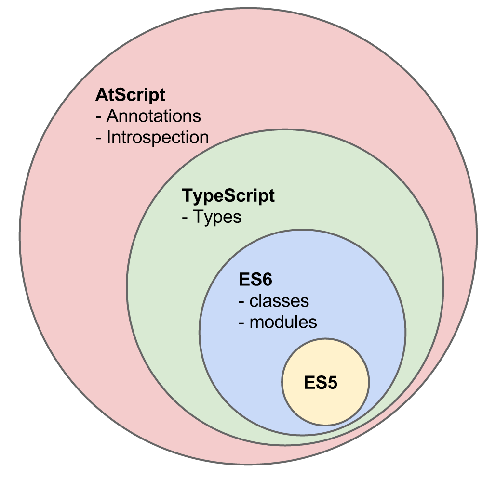
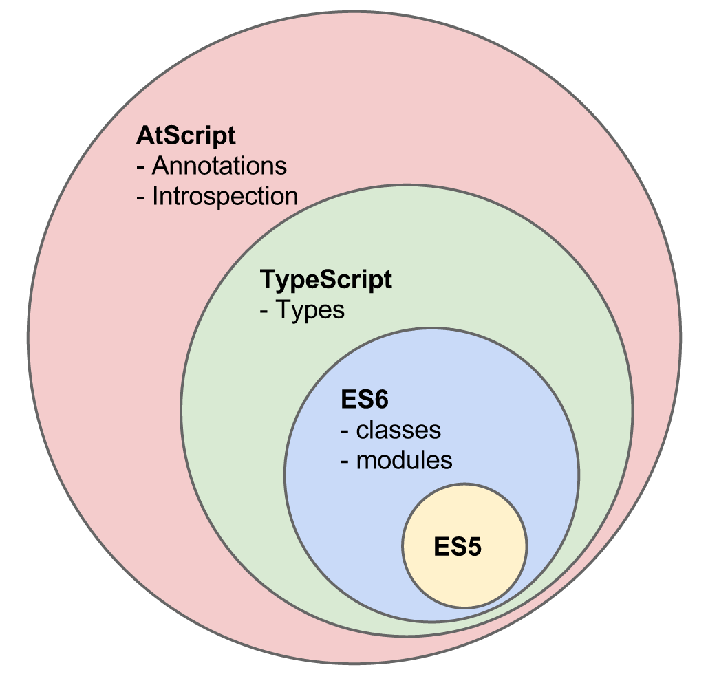
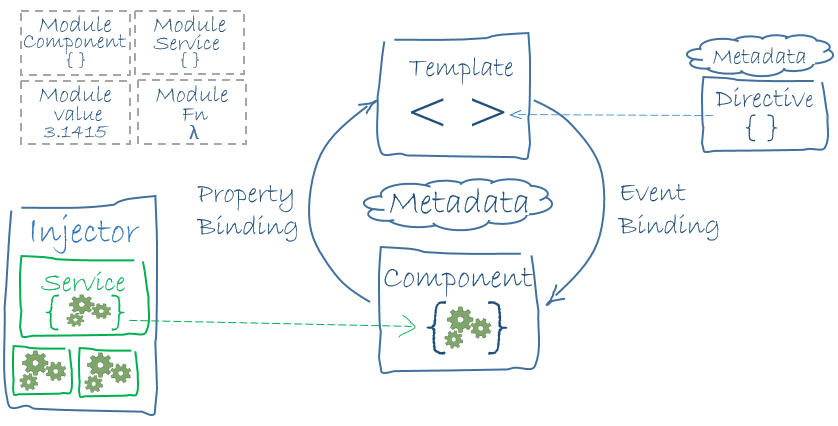
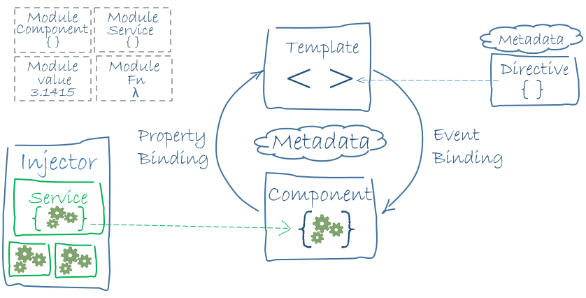

The power of TypeScript
in Angular 2
Andrii Nechytailov
April 2016
The power of TypeScript
in Angular 2
Andrii Nechytailov
April 2016

 Most Angular 2 concepts came from...
Most Angular 2 concepts came from AngularDart!
By design Dart has two essential things:
- types
- annotations
Most Angular 2 concepts came from...
Most Angular 2 concepts came from AngularDart!
By design Dart has two essential things:
- types
- annotations
 
October 2014. AtScript was introduced...

October 2014. AtScript was introduced...
 March 2015. It is announced that TypeScript team will implement all required features.
March 2015. It is announced that TypeScript team will implement all required features.
 
The basic building blocks of Angular 2 applications
Angular 2 is based on three important ideas

The basic building blocks of Angular 2 applications
Angular 2 is based on three important ideas
 EVERYTHING IS CLASS
COMPONENT BASED
DEPENDENCY INJECTION
Why do components matter?
Components only control their own View and Data
Components have a well-defined public API - Inputs and Outputs
Components have a well-defined lifecycle
An application is a tree of components
EVERYTHING IS CLASS
COMPONENT BASED
DEPENDENCY INJECTION
Why do components matter?
Components only control their own View and Data
Components have a well-defined public API - Inputs and Outputs
Components have a well-defined lifecycle
An application is a tree of components


 Template syntax
Template syntax
 Component API
Component API
 Component lifecycle
Component lifecycle

- ngOnChanges
- ngDoCheck
- ngAfterContentChecked
- ngAfterViewChecked
- ngOnInit
- ngAfterContentInit
- ngAfterViewInit
- ngOnDestroy
Everything is just a class with metadata
Dependency injection
 Angular has its own dependency injection framework
Tools
https://github.com/angular/angular-cli
Resources
https://angular.io/
https://github.com/mgechev/angular2-style-guide
http://victorsavkin.com/
Questions?
Angular has its own dependency injection framework
Tools
https://github.com/angular/angular-cli
Resources
https://angular.io/
https://github.com/mgechev/angular2-style-guide
http://victorsavkin.com/
Questions?
 http://angular2-typescript.ne4istb.com/
http://angular2-typescript.ne4istb.com/